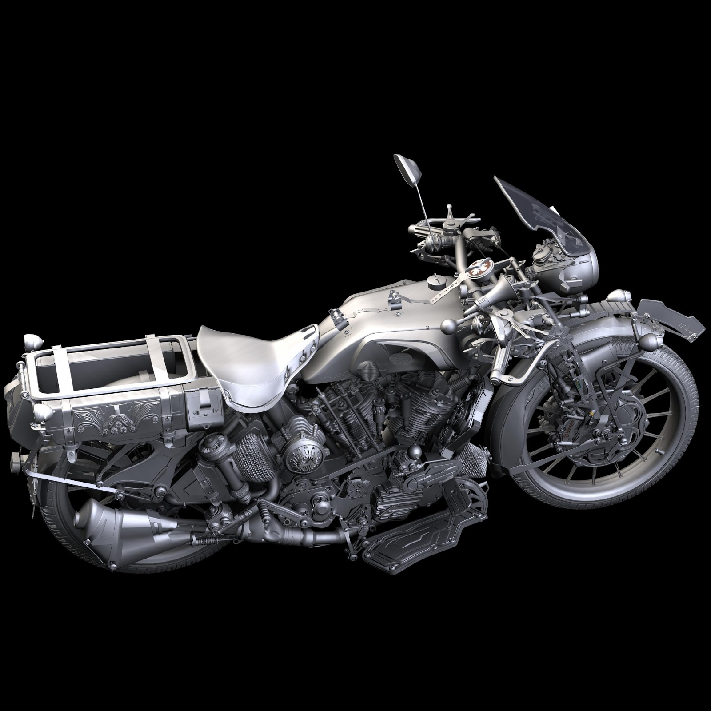

Hyunchul Yi(Jack)
3D Portfolio
LINK
Portfolio
Linkedin
EMail

- I have been working on 3D Artist for 10 Years such as Character, vehicle, weapons, power station, airplane, and props and now I am working on VR Game environment modeling at Sanzaru Games Which I have been making for interior props and exterior by Maya with ZBrush and I play with test in VR Oculus in Unreal Engine.
I finished for Marvel powers united 2017 and I just finished on Wrath for VR Oculus.
Now I work at Turn 10 studio as a 3D vehicle a artist in Redmond WA.
- I worked at Houzz as a 3D Artist in 2016
Working on Interior Props in Maya and play in Unity.
Worked closely with engineer to solve any issue.
I worked at BigFish Games as a 3D Artist for 4 years.
Modeling in Maya with rigging and animation.
Return to Ravenhearst with many games before that with Jeff.
-
I have been used Maya for 9 years and I create clean modelings for topology with retopology in game engine which I convert from high poly to low poly.
Texturing with PBR Shader by Ddo and Substance for new generation.
I graduated at the Academy of Art University and majored in 3D Animation.
I am really self motivation and team player.